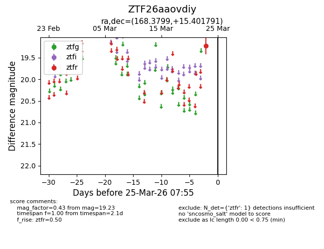
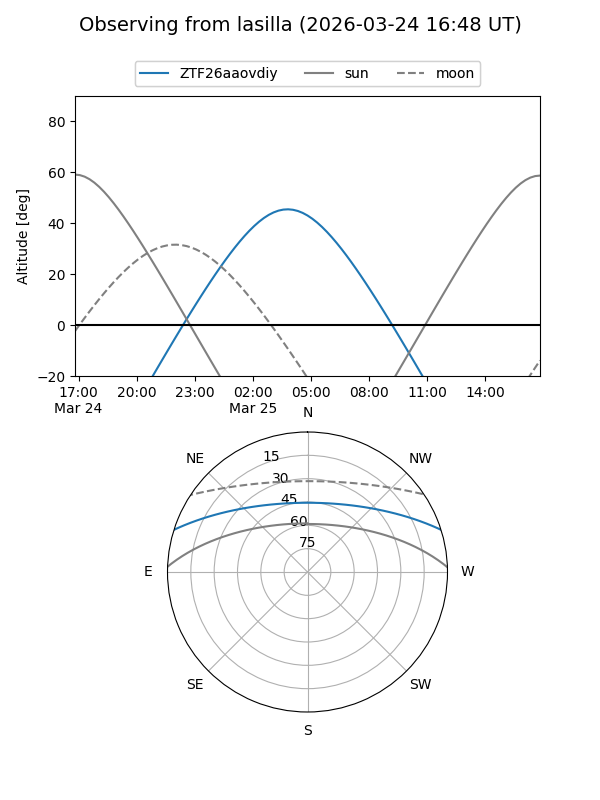
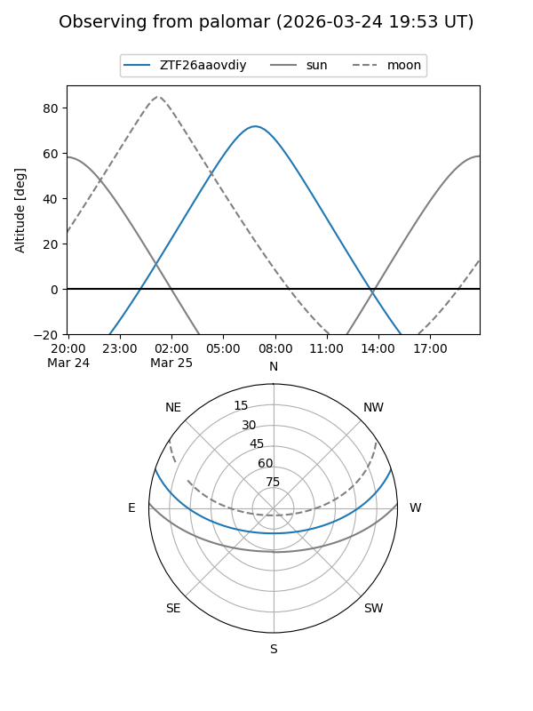

ZTF26aaovdiy
Target ZTF26aaovdiy at 2026-03-25 07:59
Aliases and brokers:
FINK: link
Lasair: link
ALeRCE: link
alt names
ZTF26aaovdiy (ztf,fink_ztf)
Coordinates:
equatorial (ra, dec) = 168.3799,+15.40179
equatorial (HMS+DMS) = 11:13:31.18,+15:24:06.45
galactic (l, b) = (235.2173,+64.42227)
Flags:
Photometry:
last ztfr=19.23
1 ztfr detections
Lightcurve

Visibility


Additional plots